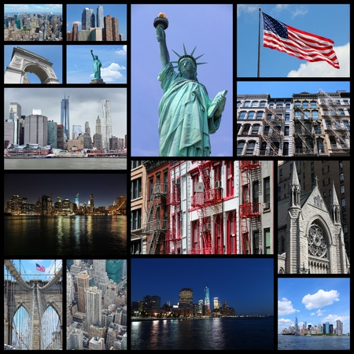
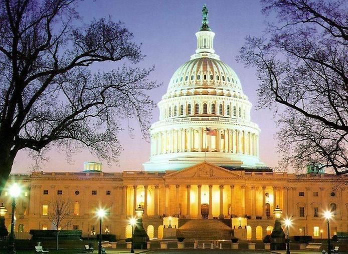

Америка
Карта Америки
Соединенные Штаты Америки – одна из крупнейших мировых держав в экономическом, политическом и культурном отношении. США имеют федеративную форму устройства: в административном плане государство состоит из 50 штатов, федерального округа Колумбия, где находится столица страны – город Вашингтон; также в подчинении США находится ряд островных территорий (Пуэрто-Рико, Виргинские Острова, Гуам и другие).
Коллаж
Избирательная кампания Дональда Трампа собрала рекордные $50,5 млн на эксклюзивном мероприятии во Флориде. Сумма вдвое превысила финансовый итог подобного мероприятия действующего президента Джо Байдена в Нью-Йорке, пишет 6 апреля The New York Post.
Управляющий хедж-фондом Джон Полсон, который устроил «Инаугурационный ужин лидеров», заявил о том, что ошеломляющая сумма показывает, как республиканцы сплачиваются вокруг Трампа.
Столица
По популярности столица США зачастую уступает шумным Нью‑Йорку и Лос‑Анджелесу. В сравнении с ними Вашингтон — это тихий город, где нет небоскрёбов, а жизнь течёт неспешно. Однако по количеству интересных локаций он может дать фору многим мировым столицам.
